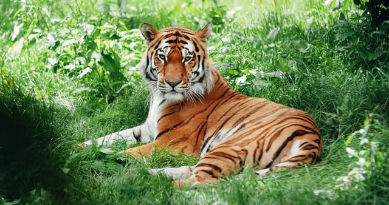
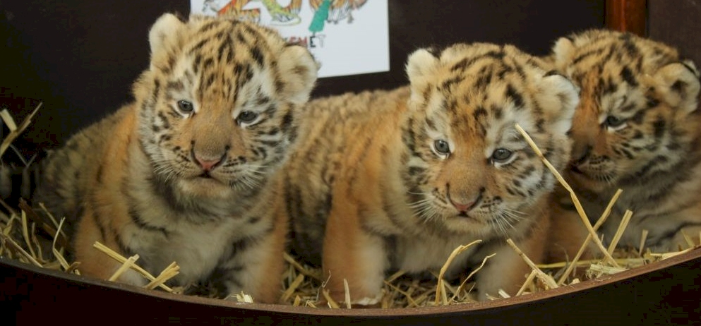

Tigrisek
A tigris (Panthera tigris) a ragadozók rendjébe és a macskafélék családjába tartozó faj. Valamennyi alfaja veszélyeztetett. Teljes állománya száz év alatt 95%-kal csökkent. Leginkább Indiában sikeres a faj megmentése.
A tigris a legnagyobb ma élő macskaféle, méretben csak a jégkorszaki amerikai oroszlán és a smilodon múlta felül. A tigrisek méretei és egyéb jellemzői alfajonként változóak. A vadon élő hím tigrisek (a kihalt alfajokat nem beleszámítva) 100 és 306 kg közötti tömegűek, hosszuk a farokkal együtt 220-330 cm (a farok hossza 60-110 cm). Nemi kétalakúság figyelhető meg, a nőstény tigrisek jóval kisebbek, 75-167 kg-ot érhetnek el, hosszuk 215-275 cm. A legkisebb alfaj a szumátrai tigris, a legnagyobb a szibériai tigris és a bengáli tigris.
Alfajok
A tigrisnek kilenc alfaját írták le, melyek közül három kihalt.
- tigris vagy amuri tigris (Panthera tigris altaica)
- dél-kínai tigris (Panthera tigris amoyensis)
- bali tigris (Panthera tigris balica) - kihalt az 1940-es években
- indokínai tigris (Panthera tigris corbetti)
- maláj tigris (Panthera tigris jacksoni)
- jávai tigris (Panthera tigris sondaica) - kihalt az 1980-as években
- szumátrai tigris (Panthera tigris sumatrae)
- bengáli tigris vagy királytigris (Panthera tigris tigris)
- kaszpi tigris (Panthera tigris virgata) - kihalt az 1970-es években, újabban egyes szerzők a szibériai tigrishez sorolják

Életmódja
A tigrisek magányos állatok, hosszabb ideig csak a nőstény és utódai élnek együtt. Bár egész nap aktívak lehetnek, főleg alkonyat után és éjszaka vadásznak. A legtöbb macskafélétől eltérően a tigris szereti a vizet, jól és kitartóan tud úszni. A nagymacskák közül csak a jaguár és a tigris számítanak jó úszónak, a tigriseket gyakran látni, amint tavakban és folyókban úsznak.
Visszahúzható karmainak és erős lábainak segítségével kiválóan mászik fára, és akár 8-10 méteres ugrásokra is képes. A hímek és a nőstények egyaránt saját territóriumot birtokolnak, a hímeké többszöröse lehet a nőstényekének, és egy hím területe több nőstényét is átfedheti. Területük határát állandóan jelölik a jellegzetes tereptárgyakra spriccelt vizeletükkel, valamint karmolásnyomokkal. Nincs természetes ellenségük, egyedül az ember jelent számukra veszélyt, míg a kölyköket kifejlett fajtársaik ölhetik meg.
A tigris fő táplálékát a nagy testű patások képezik, szarvasok, antilopok, vaddisznók, bivalyok, de akár a fiatal elefántot vagy orrszarvút, sőt alkalmanként medvéket, leopárdokat és krokodilokat is zsákmányolhat. Emellett azonban a kis testű fajok, mint például madarak, rágcsálók, békák és halak számára is veszélyt jelent, de a dögöt sem veti meg. Általában nem eszik minden nap, egy-egy sikeres vadászat után azonban egyszerre akár 40 kg húst is elfogyaszt. A kisebb zsákmányállatokat a tarkóra mért harapással öli meg, míg a nagyobb testű prédának a torkát harapja át, így fojtva meg áldozatát. Átlagosan 10-20 vadászatából mindössze egyszer jár sikerrel.
Nem nevezhető tipikus éjszakai vadásznak, nappal is gyakorta kóborol, territóriuma határait újra kijelölve. Naponta 35-40 km-t is megtesz, vizeletével, végbélmirigyének váladékával sokáig fennmaradó szagjeleket hagy maga után. Vadászata során a már kijárt ösvényeken settenkedik nesztelenül, lesve a préda felbukkanását. Vadat észlelve odalopakodik a közelébe, mindig figyelve, hogy a szél szembefújjon, így az elejteni kívánt áldozat nem érezheti meg a közelgő tigrist, majd pár hatalmas ugrás után megragadja azt. A veszélyes önvédelmi fegyverrel, aganccsal, szarvval rendelkező állatoknak a torkát ragadja meg, a vaddisznóra egyszerűen, macska módjára ráveti magát. Főleg nagyobb patás állatokat zsákmányol, de Szibériában ínséges időkben, vagy ha a rágcsálók nagyon elszaporodnak, egerészésre is adja néha a fejét. Kerüli az emberlakta vidékeket, de India sűrűn lakott folyópartjain emberevő példányok is kialakulhatnak. Ezek főleg beteg vagy idős tigrisek, amelyek felfedezik, hogy az embert könnyebb elejteni, mint a dzsungel vadjait. Az elejtett zsákmányt sosem kezdi ott helyben elfogyasztani, azt mindig elhurcolja valami védett bozótba. Egyszerre 35-40 kg húst is képes megenni. Ha jóllakott, a maradékot elrejti, fűvel, ágakkal befedi. Az így elrejtett zsákmányához később visszatér, még akkor is, ha az már oszlásnak indult. Kitűnően úszik, képes a víz alá is lebukni halászat közben. Ha melege van, szívesen hűsöl a vízben órákon át.
Tigrisek az állatkertekben
Mint veszélyeztetett faj, természetvédelmi szempontból fontos a tigrisek állatkerti tartása és tenyésztése. Az állatkerti látogatók részéről nagy népszerűségnek örvend a tigris, így az elmúlt években világszerte eredményes kampányokat folytattak a tigrisek megmentéséért, melyek révén a vadon élő tigrisek védelmének segítésére adományokat gyűjtöttek az állatkertek. Az állatkerti tigriseknek jelentős része még ma sem alfajtiszta egyed, mivel évtizedekkel ezelőtt megőrzésükre még nem szenteltek figyelmet. Az európai állatkertek a szibériai tigris és a szumátrai tigris fennmaradásáért összehangolt tenyészprogram keretében küzdenek. Magyarországon is gyakori állatkerti állatnak számít.
Különleges és örömteli esemény a Kecskeméti Vadaskertben! Szibériai Tigriskölykök születtek!
Szibériai tigriseket Budapesten, Miskolcon, Debrecenben, Nyíregyházán, Szegeden, Veszprémben, Kecskeméten, Felsőlajoson és Gyöngyösön tartanak. Maláj tigriseket Nyíregyházán tartanak. Szumátrai tigriseket szintén Nyíregyházán tartanak. Fehér színű bengáli tigriseket Nyíregyházán, Győrött, Felsőlajoson és Pécsett tartanak.
Forrás: Wikipedia